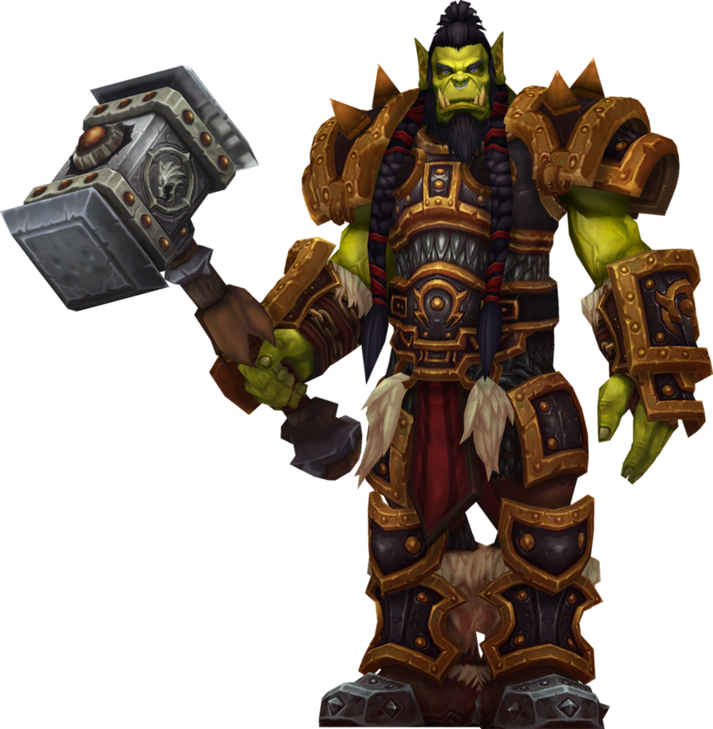

Mi jár a fejemben
Két a World of Warcraft világából található ork epikus párbaját mutatja be az animációm.
Remélem élvezni fogjátok!



Mivel Thrall látta hogy barátja Garrosh megőrült, ezért kihívta az orkok ősi párbajára a Mak'gora-ra.
Párbajuk alatt Thrall az elementális képességei segítségével legyőzte Garrosht, aki életét vesztette a párbajban.